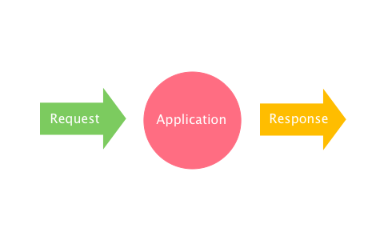

- throttling
- Recovering from panics
- Error Handling
- auth layer
- logging
- blocking ALL THE THINGS!
Without Middleware...
With Middleware...

What can we use it for
Implementating Custom Middleware:
-
type Handler interface { ServeHTTP(ResponseWriter, *Request) } - Lets write it.
-
func logger(next http.Handler) http.Handler { fn := func(w http.ResponseWriter, r *http.Request) { next.ServeHTTP(w, r) log.Printf("[%s] %q \n", r.Method, r.URL.String()) } // cast to HandlerFunc type return http.HandlerFunc(fn) } - Booyah
Now we need to chain...
Whats wrong with this?
func main(){
Middleware1(Middleware2(Middleware3(App)))
}
- Absolutly nothing.
- just ugggly
Framework?
- Yes, you can...
- do I suggest it, no.
- Overkill
- bloated
- net/http is awesome!
Alice in Wonderland
100 lines of code that addresses this
- allows for you to use pretty much any thing
- keeps net/http
func main() {
alice.New(Middleware1, Middleware2, Middleware3).Then(App)
}
or
func main() {
alice.New(Middleware1).
Append(Middleware2).
Append(Middleware3).
Then(App)
}
Good People to Follow
- @justinas
- @nicolasmerouze
"Best" Practices
- Seperate packages per each
- Don't change the handler interface.
- Be compatable with net/http
- Don't use a framework unless you have to.